Guia para as 4ªs Armas
Este é um guia passo a passo para a aquisição das quartas armas em Dynasty Warriors 5, que são as armas com melhores atributos do jogo. Para obter a quarta arma, certifique-se de que você está jogando o estágio especificado, no lado especificado e na dificuldade difícil. Você pode obter a quarta arma tanto no Modo Livre quanto no Modo Musou.
Oficiais - Shu
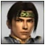
Zhao Yun
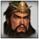
Guan Yu
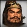
Zhang Fei
Zhuge Liang
Liu Bei
Ma Chao
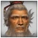
Huang Zhong
Jiang Wei
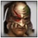
Wei Yan
Pang Tong
Yue Ying
Guan Ping
Xing Cai
Oficiais - Wu
Zhou Yu
Lu Xun
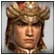
Taishi Ci
Sun Shang Xiang
Sun Jian
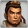
Sun Quan
Lu Meng
Gan Ning
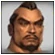
Huang Gai
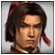
Sun Ce
Da Qiao
Xiao Qiao
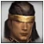
Zhou Tai
Ling Tong
Oficiais - Wei
Xiahou Dun
Dian Wei
Xu Zhu
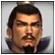
Cao Cao
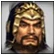
Xiahou Yuan
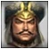
Zhang Liao
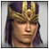
Sima Yi
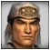
Xu Huang
Zhang He
Zhen Ji
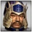
Cao Ren
Cao Pi
Pang De
Oficiais - Others
Diao Chan
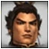
Lu Bu
Dong Zhuo
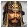
Yuan Shao
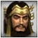
Zhang Jiao
Meng Huo
Zhu Rong
Zuo Ci
Shu - Zhao Yun
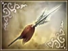
Fierce Dragon
Ataque Base: 36; Peso: Médio
Estatísticas: Ataque: +17, Defesa: +17, Vida: +17, Musou: +17, Carregado: +16
Etapa: Battle of Cheng Du (Liu Bei)
Requisitos: Conquiste o Castelo Luo em menos de 5 minutos derrotando Liu Xun, seus 3 subgenerais, e abrindo todos os 3 portões.
Passo a passo: Primeiro, prossiga e elimine todas as tropas inimigas. Isso tornará a etapa mais fácil de terminar mais tarde e também garantirá a sobrevivência de Zhang Fei. Depois, elimine Lei Tong, o primeiro subordinado de Liu Xun, para abrir o portão do forte sul. Elimine todos os soldados inimigos que vierem até você e depois vá até o portão norte do castelo sul e elimine o capitão do portão. Depois de fazer isso, vá até a posição de Liu Xun e logo você encontrará os outros dois subordinados de Liu Xun, Deng Xian e Fei Guan. Derrote ambos e siga para oeste até um portão inimigo e elimine seu capitão. Por fim, vá até Liu Xun e elimine ele e o capitão do portão atrás dele, e você receberá imediatamente o relatório do item especial.
Shu - Guan Yu
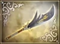
Blue Moon Dragon
Ataque Base: 38; Peso: Leve
Estatísticas: Ataque: +18, Defesa: +17, Vida: +18, Carregado: +16, Montaria: +16
Etapa: Battle of Fan Castle (Shu)
Requisitos: Derrote Niu Jin e Yue Jin antes que o ataque de água seja ativado. Em seguida, execute o ataque de água com sucesso.
Passo a passo: O ataque aquático será desencadeado cerca de quatro minutos após o início do estágio, o que lhe dará tempo suficiente para localizar e derrotar Niu Jin e Yue Jin. Ambos estão na parte norte do palco, mas para saber a localização exata, acesse o menu Informações da Unidade e procure nos suboficiais de Cao Ren. Depois de derrotar ambos, corra ao redor do palco selando os portões inimigos, derrotando bases inimigas, oficiais inimigos e outros para ganhar tempo, mas entrar no Castelo Fan resultará na falha do ataque aquático. Assim que o ataque aquático acontecer, você receberá o relatório de item especial da arma.
Shu - Zhang Fei
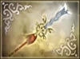
Viper Blade
Ataque Base: 39; Peso: Leve
Estatísticas: Ataque: +19, Defesa: +15, Musou: +17, Preencher: +16, Montaria: +16
Etapa: Battle of Chang Ban (Liu Bei)
Requisitos: Não permita que nenhum soldado ou oficial passe da Ponte Chang Ban . Derrote Xiahou Dun, Wen Pin e Xiahou En (subgeneral de Yu Jin).
Passo a passo: Se Zhang Fei for forte o suficiente, desbloquear esta arma é simplesmente uma questão de sobreviver na Ponte Chang Ban por tempo suficiente para acionar o relatório do item precioso. Caso contrário, este desafio será melhor abordado com dois jogadores: faça com que o segundo jogador guarde a ponte enquanto o primeiro, controlando Zhang Fei, derrota Xiahou Dun, Wen Pin e Xiahou En, todos os quais se moverão em direção à ponte.
Shu - Zhuge Liang
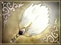
Peacock Feather
Ataque Base: 32; Peso: Médio
Estatísticas: Defesa: +18, Musou: +20, Preencher: +15, Carregado: +18, Arco: +15
Etapa: Battle of Tian Shui (Shu)
Requisitos: Derrote Jiang Wei antes que ele retorne ao Castelo Tian Shui.
Passo a passo: Para fazer Jiang Wei recuar em primeiro lugar, capture o Castelo Nan An e o Castelo An Ding derrotando Xiahou Mao e Cui Liang, respectivamente. Depois de um tempo, Jiang Wei decidirá retornar ao Castelo Tian Shui. Agora intercepte-o (de preferência em uma boa sela) pela rota leste antes que ele possa voltar para o castelo.
Shu - Liu Bei
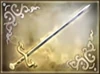
Gold Moon Dragon
Ataque Base: 34; Peso: Médio
Estatísticas: Defesa: +18, Musou: +15, Montaria: +15, Velocidade: +18, Sorte: +20
Etapa: Battle of Yi Ling (Shu)
Requisitos: Derrote Gan Ning, Ling Tong, Sun Shang Xiang e Lu Xun.
Passo a passo: É recomendável que você derrote Zhu Ran (e pare o ataque de fogo), porque Gan Ning e Ling Tong ficam fortalecidos se você não conseguir. Também é possível derrotar Ling Tong antes mesmo que o ataque de fogo ocorra, atirando nele do outro lado do rio. Sun Shang Xiang é um subgeneral de Sun Quan e recuará quando Liu Bei a encontrar em uma cena. Você deve persegui-la para derrotá-la.
Shu - Ma Chao
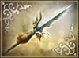
Stallion Fury
Ataque Base: 38; Peso: Médio
Estatísticas: Ataque: +17, Defesa: +16, Vida: +15, Montaria: +20, Velocidade: +15
Etapa: Battle of Tong Gate (Allied)
Requisitos: Derrube Cao Cao do cavalo antes que ele cruze o Rio Amarelo.
Passo a passo: Use de montaria o Red Hare ou Shadow Runner. Basicamente, qualquer cavalo serve, mas como você precisa ir de um lado do mapa para o outro em cerca de 30 segundos, você quer algo rápido. Ao usar a Lebre Vermelha, você garante uma jornada rápida, mas há muitos arqueiros e tropas no caminho, então um Arnês das Sombras é outra excelente escolha para garantir que você não seja desmontado. A rota mais rápida é seguir pelo Rio Amarelo, onde estão localizados Xu Zhu e Zhu Ling. Basta passar por eles direto para Cao Cao. Quando o vires, simplesmente derruba-o do cavalo. O relatório do Item Valioso aparecerá e a arma estará localizada no meio da área nordeste, entre as três bases neutras.
Shu - Huang Zhong
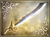
Oracle Sword
Ataque Base: 36; Peso: Leve
Estatísticas: Arco: +20, Defesa: +15, Musou: +15, Preencher: +18, Montaria: +15
Etapa: Battle of Mt. Ding Jun (Shu)
Requisitos: Derrote Xiahou Yuan e Zhang He antes da chegada de Cao Cao.
Passo a passo: Comece derrotando Xiahou Hui para capturar o Monte Tian Dang. Isso dará ao seu exército um começo forte para que você possa ignorá-los com segurança enquanto segue sua própria agenda. Passe para Xiahou Yuan, que será difícil de derrotar. Depois que ele estiver deitado na lama, você só precisa perseguir e derrotar Zhang He, que é muito mais fácil. Um relatório de item precioso deve aparecer depois. Mas não se deixe enganar, porque é o Caminho do Musou. A verdadeira mensagem do item precioso da arma de Huang Zhong aparece somente depois que Cao Cao realmente chega, daí a razão pela qual a chegada de Cao Cao faz parte do requisito em si. O único truque para obter esta arma é o ato de derrotar Xiahou Yuan, que está em modo hiper neste palco. Isso é ainda mais complicado pelo fato de que você não terá tempo suficiente para lutar para subir com seu exército. Se o seu Huang Zhong for fraco, você pode querer ter certeza de encontrar um Musou Rage antes de enfrentá-lo (você pode tentar rastrear Zhang He primeiro). Você também pode usar um segundo jogador para enfraquecê-lo, desde que garanta que Huang Zhong receba a morte.
Shu - Jiang Wei
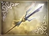
Blink
Ataque Base: 36; Peso: Médio
Estatísticas: Ataque: +16, Vida: +17, Musou: +18, Velocidade: +15, Sorte: +15
Etapa: Battle of Tian Shui (Wei)
Requisitos: Derrote Gao Xiang após desencadear sua emboscada.
Passo a passo: No início da etapa, viaje para o canto superior direito–lado do mapa e espere, sem fazer nenhum confronto com o exército de Shu, a menos que seja absolutamente necessário. Depois de algum tempo, o moral do seu lado despencará drasticamente, o que resultará na eventual queda dos castelos Nan An e An Ding. Assim que caírem, seu comandante, Ma Zun, começará a fugir de Tian Shui, o que por sua vez desencadeará uma emboscada do comandante inimigo Gao Xiang no mesmo canto do palco em que você está localizado. Elimine Gao Xiang imediatamente e você receberá um relatório de item especial para o Blink (que você pode encontrar facilmente se continuar verificando seu Histórico de Palco). Neste ponto, Ma Zun lançará um ataque praticamente inútil ao acampamento principal de Shu. Depois de pegar Blink, corra para o acampamento e elimine Zhuge Liang para terminar a etapa,mas certifique-se de fazer isso antes que Ma Zun seja morto.
Shu - Wei Yan
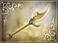
Comet Strike
Ataque Base: 36; Peso: Médio
Estatísticas: Ataque: +18, Defesa: +16, Musou: +15, Carregado: +16, Sorte: +15
Etapa: Battle of Chen Cang (Shu)
Requisitos: Derrote os quatro capitães de defesa que guardavam Chen Cang.
Passo a passo: No início da etapa, carregue o lado mais oriental do mapa que leva ao Castelo Chen Cang. Fazer isso desencadeará uma emboscada, mas ignore os atacantes e continue pelo portão leste de Chen Cang. Uma vez lá dentro, siga para o sul em direção à muralha do castelo, e você encontrará três dos quatro Capitães de Defesa que você precisa matar. Retire-os e siga para a posição de Cao Ren, que deve ficar logo ao norte de onde você está. Derrote Cao Ren para abrir seu portão e depois siga para o portão oeste de Chen Cang, que você pode encontrar facilmente rastreando Hao Zhao em seu menu Informações da Unidade, e em breve você encontrará o quarto e último Capitão de Defesa. Derrote-o e você receberá imediatamente o relatório do item especial.
Shu - Pang Tong
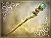
Tornado Staff
Ataque Base: 32; Peso: Médio
Estatísticas: Ataque: +18, Defesa: +16, Musou: +15, Carregado: +16, Sorte: +15
Etapa: Battle of Chen Cang (Shu)
Requisitos: Tenha sucesso nas estratégias contra os pântanos venenosos, animais selvagens e tropas blindadas.
Passo a passo: Embora os requisitos possam parecer bastante complicados, na verdade são bastante fáceis de cumprir. Comece capturando a base diretamente à sua frente, tendo assim sucesso na missão do pântano venenoso. Depois, prossiga para a área centro-norte, onde os animais selvagens aparecerão. Finalize o ataque Nanman capturando a base a leste de sua localização, e os Juggernauts de Yue Ying chegarão para indicar seu sucesso. Em seguida, prossiga em direção a Wu Tugu, no oeste, onde atacará com as tropas blindadas. Zhuge Liang enviará uma força-tarefa para instalar explosivos na área. Derrote Wu Tugu rapidamente antes que a força-tarefa seja morta, e a mensagem do item precioso deve aparecer. A rota mais rápida e eficaz:
1. O evento da ponte sobre o pântano ocorrerá assim que você derrotar e proteger a base. Aconselho usar o JC de Pang Tong aqui para se movimentar evitando o veneno dos pântanos.
2. Derrote o Rei Duosi e proteja o portão próximo, se necessário. Meng Huo se aproximará rapidamente de sua posição, então derrote-o e siga pela rota até encontrar e despachar Jinhuan Sanjie.
3. Prossiga para a próxima base no oeste, onde as tropas blindadas estarão esperando por você, e mate Mang Yangchang. Mova-se para a base e capture-a. Localize Wu Tugu e envie-o também.
4. Prossiga de volta para o leste e depois para o norte e encontre Ahui Nan e Dong Tu Na que estão um com o outro na mesma posição. Derrote os dois. Siga mais para o norte.
5. Você receberá uma citação de Pang Tong aqui ’’O movimento deles é estranho! Existe um caminho oculto?’’ Tudo o que você precisa fazer agora é abrir a base para deixar Yue Ying passar, protegendo-a onde ela está atacando do outro lado, derrotando o capitão do portão, protegendo a base e depois Meng Huo. Então derrote o Rei Mulu, que está montado em um elefante. Uma maneira fácil de derrubá-lo é com o musou de Pang Tong. Relatório de item especial localizado perto de um galho de árvore caído, um pouco a noroeste do pântano venenoso.
Shu - Yue Ying
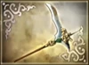
Oblivion
Ataque Base: 36; Peso: Leve
Estatísticas: Defesa: +17, Vida: +16, Carregado: +15, Montaria: +15, Arco: +16
Etapa: Battle of Wu Zhang Plains (Shu)
Requisitos: Elimine Deng Ai antes que ele monte as catapultas.
Passo a passo: Wu Zhang Plains é uma batalha cinco estrelas, então Yue Ying deveria estar no máximo ao tentar isso. Deng Ai aparece assim que você entra em um dos três depósitos de suprimentos de Wei ao sul de Cao Ren. Ele também aparecerá se você demorar muito para entrar em qualquer um dos depósitos. Quando ele aparecer, você deve pular no cavalo e ir direto até ele, porque ele já estará indo em direção à sua posição. Quanto mais perto ele estiver, mais difícil será matá-lo a tempo. Comece a espancá-lo e não pare até que ele vá embora, pois ele fugirá se você lhe der uma chance. Isso é tudo o que você precisa fazer para conseguir a arma, no entanto, fica mais difícil tentar limpar o campo. Meu conselho é ir direto para Cao Ren e levá-lo para sair e depois Xu Zhu para tirá-los de suas costas. Eles são realmente o desafio mais difícil do palco. Agora prossiga para limpar o campo como achar melhor.Será mais fácil do que matar Sima Yi.
Shu - Guan Ping
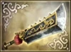
Young Dragon
Ataque Base: 36; Peso: Leve
Estatísticas: Ataque: +17, Vida: +15, Carregado: +16, Sorte: +16, Arco: +15
Etapa: Escape from Chi Bi (Shu)
Requisitos: Derrote todos os oficiais inimigos.
Passo a passo: Isso é bastante auto–explicativo. Ao perseguir Cao Cao, elimine todos os policiais que estiverem no seu caminho. Sub–oficiais não precisam ser derrotados. Conforme você avança, Cao Cao para aleatoriamente e espera por reforços. Derrote os reforços que aparecem e continue seguindo Cao Cao. Ele finalmente chegará a um ponto onde parará e esperará na área mais ao norte do mapa. Ele vai esperar lá até que Xun You apareça. Quando ele aparecer, ele criará uma fortaleza inimiga para Cao Cao escapar. Vá derrotá-lo e o relatório do Item Valioso aparecerá (desde que você tenha derrotado todos os outros oficiais). Se você derrotou todos os outros, você deve ter muitos aliados para manter Cao Cao ocupado para que você possa ir buscar sua arma. Depois de obtê-lo, basta correr de volta e derrotar Cao Cao.
Shu - Xing Cai
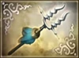
Ambition
Ataque Base: 34; Peso: Médio
Estatísticas: Defense: +17, Vida: +15, Musou: +17, Sorte: +16, Arco: +15
Etapa: Battle of Ba Dai Castle (Shu)
Requisitos: Resgate as tropas voluntárias e permita que sua saúde seja severamente prejudicada. Liu Chan marchará e você deverá se encontrar com ele. Por fim, ajude-o a retornar ao castelo.
Passo a passo: Certifique-se de que Xing Cai esteja bem preparado, pois esta é uma batalha difícil. Siga em direção ao lado oeste do mapa, matando policiais conforme eles chegam. Quando Ma Chao diz “Wu atacaria até os fracos?”, você deve derrotar os oficiais que estão no sudoeste. Assim que estiver limpo, os camponeses agradecerão e dirão que defenderão o castelo. Agora deixe o inimigo bater em você até que sua barra de saúde fique vermelha. Liu Chan ficará preocupado e sairá atrás de você. Vá até ele e desencadeie a cena. Agora acompanhe-o de volta ao castelo (é por isso que você deveria ter matado os generais em seu caminho no início) e você receberá o valioso relatório do item. Sugiro guardar uma raiva musou para Sun Quan, pois ele é bastante durão.
Wu - Zhou Yu
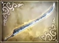
Ancients Sword
Ataque Base: 34; Peso: Médio
Estatísticas: Ataque: +16, Defesa: +15, Musou: +18, Carregado: +17, Arco: +16
Etapa: Battle of the Wu Territory (Sun Ce)
Requisitos: Derrote Yan Baihu e Wang Lang.
Passo a passo: Esta arma é muito fácil de obter. Primeiro corra para o forte nordeste e elimine Yan Baihu. Em seguida, corra para o forte no oeste e elimine Wang Lang. O relatório do item precioso deve aparecer agora. No geral, a parte mais difícil de conseguir esta arma é derrotar Taishi Ci no final.
Wu - Lu Xun
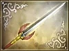
Falcon
Ataque Base: 34; Peso: Médio
Estatísticas: Ataque: +15, Preencher: +15, Musou: +19, Velocidade: +20, Sorte: +18
Etapa: Battle of Bai Di Castle (Wu)
Requisitos: Derrote Ma Chao e Jiang Wei antes que Yue Ying chegue.
Passo a passo: Yue Ying chega 1 minuto e 30 segundos depois de derrotar Xing Cai ou pisar no castelo Bai Di, então evitar ambos deve ser sua maior prioridade. Fora isso, toque no palco como faria normalmente. No entanto, esteja ciente de que Ma Chao é muito duro neste palco e fica furioso quando você se aproxima dele.
Wu - Taishi Ci
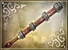
Tiger Slayer
Ataque Base: 38; Peso: Médio
Estatísticas: Defesa: +18, Vida: +18, Carregado: +15, Montaria: +15, Arco: +15
Etapa: Battle of the Wu Territory (Allied)
Requisitos: Depois que Zhang Ying enganar Sun Quan, derrote Sun Quan e Zhou Tai antes que eles se encontrem.
Passo a passo: Esta arma é bastante fácil de obter. Comece a etapa normalmente e Zhang Ying em breve atrairá Sun Quan para o forte oriental. Agora, corra e derrote Sun Quan antes que Zhou Tai consiga encontrá-lo. Isso exigirá um Taishi Ci bastante forte para ser realizado. Depois que Sun Quan for derrotado, simplesmente derrote Zhou Tai. A mensagem do item precioso aparecerá então.
Wu - Sun Shang Xiang
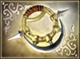
Sol Chakram
Ataque Base: 32; Peso: Pesado
Estatísticas: Defesa: +17, Vida: +15, Velocidade: +19, Sorte: +19, Arco: +15
Etapa: The Invasion of Nan Zhong (Wu)
Requisitos: Com todos os generais aliados vivos, derrote todos os generais e subgenerais inimigos.
Passo a passo: Primeiro elimine Dong Tu Na, Ahui Nan e seu general, Jinhuan Sanjie. Em seguida, passe pela base de ataque ao sul e em direção a Meng Huo. Ele aparecerá no canto nordeste e as feras do Rei Mulu atacarão sua base. Mate Meng You e depois mate o tempo matando inimigos e o general inimigo Rei Duosi. Você precisa esperar até que Sun Quan esteja quase completamente isolado. Após cerca de três minutos a ponte será destruída. Corra para Sun Quan e haverá uma cena em que Sun Shang Xiang conhece Quan. Mate o Rei Mulu e o outro general paralelo a ele no acampamento. Reforços começarão a aparecer para o Nanman perto de Zhu Rong. Vá e mate o general e Zhu Rong, depois vá em direção à base de defesa ao sul de Meng Huo, onde Yang Feng aparecerá. Mate-o também. Então vá para a base de ataque no oeste e Wu Tugu aparecerá.Mate-o e a arma aparecerá bem ao seu lado.
Wu - Sun Jian
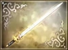
Savage Tiger
Ataque Base: 34; Peso: Leve
Estatísticas: Defesa: +16, Vida: +15, Musou: +15, Preencher: +18, Montaria: +16
Etapa: Battle of Si Shui Gate (Allied)
Requisitos: Derrote Lü Bu 5 minutos após sua chegada.
Passo a passo: Como Lü Bu é tão difícil de derrotar, especialmente na dificuldade Difícil, é altamente recomendável que você elimine a maioria das forças de Dong Zhuo antes de atacá-lo. Lü Bu aparecerá quando você se aproximar do Portão Si Shui, mas certifique-se de que seu Sun Jian esteja bem fortalecido antes de tentar pegar a arma. A estratégia de como derrotar o próprio Bu depende da sua preferência pessoal, mas usar a Fúria Musou tornará a luta muito mais fácil. Se você derrotar Lü Bu dentro do limite de cinco minutos, receberá imediatamente o relatório de item especial.
Wu - Sun Quan
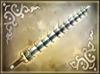
Savage Tiger
Ataque Base: 34; Peso: Médio
Estatísticas: Ataque: +16, Carregado: +17, Musou: +18, Preencher: +15, Arco: +15
Etapa: Battle of Chi Bi (Sun Quan)
Requisitos: Tenha sucesso em todas as três partes do ataque de fogo. Em outras palavras, conseguir ligar os navios inimigos, garantir que Zhuge Liang invoque o vento e incendiar a frota de Wei.
Passo a passo: Como Chi Bi é apenas o segundo estágio de Sun Quan no Modo Musou, é altamente recomendável que você tente obter esta arma no Modo Musou em vez do Modo Livre, onde Chi Bi se torna um estágio de dificuldade de 5 estrelas. Para ligar os navios inimigos, derrote Cai Mao e Wang Lang. Então, prossiga para Zhuge Liang quando ele começar a orar pelo vento e derrote todos os soldados e generais que se aproximarem dele. Zhang Liao e seus subordinados deveriam se aproximar de Zhuge Liang, enquanto Xiahou Yuan deveria atacar Huang Gai. Derrote ambos para garantir o sucesso de seus respectivos alvos. Esteja ciente de que a estratégia de Zhuge Liang será adiada (e, por fim, frustrada), mesmo que apenas soldados inimigos estejam presentes no altar. Quando a frota de Cao Cao pegar fogo, a mensagem do item precioso deverá aparecer. A rota mais rápida e eficaz:
1. Avance e derrote Wang Lang. Volte e use o mapa para localizar o portão sozinho. Aproxime-se do portão e proteja-o. Você pode encontrar Yue Jin no caminho, então envie-o rapidamente.
2. Depois de proteger o portão central do lado de Wu na Marinha, siga pelo caminho para encontrar Zhu Ling. Derrote-o e faça as próximas curvas à direita para encontrar a segunda conexão de navio e se livrar de Cai Mao. A cena de Pang Tong ocorrerá quando você sair da plataforma e as naves estiverem contidas juntas. Então essa é 1 das 3 missões cumpridas.
3. Enquanto isso, enquanto Huang Gai se muda para seu destino, use esse tempo para derrotar os dois oficiais de Zhang Liao, Wen Pin e Xun You, na ilha esquerda, perto do altar. Você pode encontrar Cheng Yu no caminho, então mate-o e continue até os dois policiais listados acima, protegendo os dois portões se desejar.
4. Agora você já deve ter notado que Xiahou Yuan está se aproximando de Huang Gai ou está brigando com ele. Mate-o e outros tantos inimigos ao redor da posição de Huang Gai para saber que ele estará seguro para deixar para trás antes de ir para o altar de Zhuge Liang.
5. A localização de Zhuge Liang é perto do altar no canto inferior esquerdo do mapa, na ilha fina à esquerda. Ele já deveria ter começado sua oração pelo vento, mas como você cuidou dos oficiais de Zhang Liao, as coisas ficarão mais fáceis. Embora qualquer pequeno grupo de inimigos possa facilmente atrasar sua oração, uma vez que um único inimigo pise em seu altar, ele parará até que as ameaças sejam tratadas. Então eu aconselho você a ficar bem na frente da entrada do degrau dos alters dele e esperar que as forças se aproximem de você, em vez de você se aproximar delas.
O navio de Huang Gai já deveria ter partido ou partirá muito em breve, a julgar que ele não tem ninguém ao seu redor para causar mais atrasos. E a essa altura Zhang Liao estará se aproximando do altar, mas isso não deve ser um problema, considerando que ele está sozinho e você terá aliados por perto mantendo-o afastado.
6. Espere Huang Gai terminar seu trabalho através da cena dele e logo após a cena de Sun Quan. Mas você ainda não receberá o relatório do item, pois deverá esperar que a oração de Zhuge Liang seja um triunfo na 3a e última cena. Depois disso, Cao Cao anunciará que sua frota está queimando e você receberá o relatório do Item Especial. A caixa está localizada em um dos navios maiores de Cao Cao, em formato quadrado.
Wu - Lu Meng
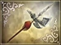
White Tiger
Ataque Base: 36; Peso: Médio
Estatísticas: Defesa: +17, Vida: +17, Carregado: +15, Arco: +15, Montaria: +16
Etapa: Battle of Fan Castle (Wu)
Requisitos: Faça Fu Shiren e Mi Fang desertarem. Então, com os dois ainda vivos, derrote Zhang Bao e Zhang Fei.
Passo a passo: Comece o palco como faria normalmente. Depois de alguns minutos, você será informado de que uma fortaleza inimiga está impedindo reforços. Capture o portão indicado e Xu Huang aparecerá. Espere aproximadamente 5 minutos para que Zhang Fei e Zhang Bao apareçam como reforços para Guan Yu. Agora, vá e ataque Mi Fang e Fu Shiren depois que Lu Xun aconselhar você a fazer isso. Eles desertarão depois que você diminuir cerca de metade da saúde deles. Com os dois ainda vivos, derrote rapidamente Zhang Bao e depois Zhang Fei. O relatório do item precioso deve aparecer imediatamente depois.
Wu - Gan Ning
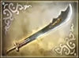
Sea Master
Ataque Base: 38; Peso: Leve
Estatísticas: Ataque: +19, Musou: +15, Carregado: +15, Velocidade: +15, Sorte: +18
Etapa: Battle of Xia Kou (Huang Zu)
Requisitos: Derrote Ling Cao e Ling Tong em menos de 10 minutos de etapa.
Passo a passo: Quando a etapa começar, siga imediatamente para oeste e ignore Ling Cao. Se você derrotá-lo primeiro, Ling Tong ficará furioso e, portanto, se tornará um oponente muito mais difícil. Ignore todas as tropas e oficiais em seu caminho e elimine Ling Tong o mais rápido possível. Assim que ele for derrotado, corra de volta para Ling Cao e acabe com ele para o relatório do Item Valioso.
Wu - Huang Gai
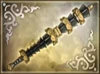
Dark Shadow
Ataque Base: 36; Peso: Médio
Estatísticas: Ataque: +17, Defesa: +17, Vida: +15, Carregado: +15, Sorte: +16
Etapa: The Yellow Turban Rebellion (Allied)
Requisitos: Derrote todos os generais e subgenerais fora do castelo.
Passo a passo: A maior ameaça ao seu sucesso não é o inimigo, mas seus aliados. Como a Rebelião do Turbante Amarelo é uma das fases mais fáceis do jogo, você pode facilmente não conseguir obter a arma permitindo que seus aliados derrotem um oficial. Os subgenerais inimigos também estão espalhados pelo mapa, então você terá que voltar atrás com bastante frequência. Portanto, é de suma importância que você equipe um bom selim para esta etapa. Fique de olho no fluxo da batalha e derrote primeiro os oficiais que têm maior probabilidade de cair nas mãos de seus aliados. Use o recurso “Informações da unidade” com frequência para monitorar também os subgenerais. Se você derrotar pessoalmente todos os generais e subgenerais, a mensagem do item precioso deverá aparecer.
Wu - Sun Ce
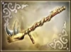
Overlord
Ataque Base: 36; Peso: Médio
Estatísticas: Ataque: +18, Musou: +15, Vida: +15, Carregado: +15, Velocidade: +18
Etapa: The Trials of Sun Ce (Wu)
Requisitos: Derrote todas as ilusões de Yu Ji.
Passo a passo: Basicamente, use apenas SSSST e seu musou. Traga um bom guarda-costas, de preferência um mago com o elemento gelo. Continue derrotando tudo que Yu Ji joga em você, continue fazendo malabarismos com os fantasmas e eles cairão rapidamente. Ele começa com alguns fantasmas de si mesmo, um de Da Qiao, um de Sun Jian, e termina com poderosos fantasmas de si mesmo. Você terá que derrotar todos eles.
Wu - Da Qiao
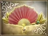
Qiao Beauty
Ataque Base: 32; Peso: Pesado
Estatísticas: Ataque: +16, Defesa: +15, Vida: +15, Musou: +19, Sorte: +18
Etapa: Battle of Xia Kou (Sun Quan)
Requisitos: Derrote Gan Ning e Cai Mao antes que Ling Tong seja morto.
Passo a passo: Comece movendo-se para oeste através do seu acampamento principal até o canto sudoeste. Então vá para o norte e entre em batalha com Gan Ning quando ele aparecer perto da base de defesa à direita. Mate Gan Ning o mais rápido que puder e certifique-se de que Ling Tong não morra no processo. Gan Ning fica hiperativo, então um musou rage é útil junto com a Demon Band, se você tiver. Além disso, tome cuidado com o musou de Gan Ning, porque ele pode destruir uma parte bastante grande da sua barra de vida. Depois, passe pela base de defesa e siga para o sul em direção a Cai Mao e mate-o; ele não é tão duro.
Wu - Xiao Qiao
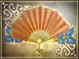
Qiao Grace
Ataque Base: 32; Peso: Pesado
Estatísticas: Carregado: +17, Defesa: +15, Preencher: +15, Musou: +15, Velocidade: +19
Etapa: Battle of Jing Province (Sun Jian)
Requisitos: Mate Cai Mao e Lu Gong antes que Sun Jian seja emboscado.
Passo a passo: Corra direto para Cai Mao, que está no portão mais ao sul do castelo. Em breve acontecerá uma cena com um confronto entre Huang Zu e Sun Jian. Continue em direção a Cai Mao depois. Mate Cai Mao e entre no castelo o mais rápido que puder. Agora vá para o leste através do castelo e suba até chegar a Lu Gong. Mate-o rapidamente, antes que Huang Zu diga “Seu idiota…”
Wu - Zhou Tai
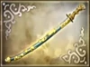
Dusk
Ataque Base: 36; Peso: Médio
Estatísticas: Ataque: +17, Vida: +15, Preencher: +16, Musou: +18, Velocidade: +15
Etapa: Battle of Yi Ling (Wu)
Requisitos: Derrote Zhao Yun antes do ataque de fogo. Certifique-se de que o ataque de fogo de Zhu Ran seja bem-sucedido.
Passo a passo: Siga em frente e siga para a base inimiga mais próxima de Zhu Ran. Tome a base e mate Li Yan para garantir que Zhu Ran sobreviva. Sinta-se à vontade para matar algumas tropas também. Então vá rapidamente até Zhao Yun, que está estacionado no portão no leste. Não se preocupe em matar os subgenerais dele se eles estiverem perto dele, apenas vá até ele, embora você possa ter que matar os subgenerais dele para que eles não lhe causem muitos problemas. Depois, vá até a unidade de Zhu Ran. Você não precisa passar pelo seu acampamento principal, basta esperar do outro lado da margem até que a colocação da ponte esteja concluída. Durante esse tempo, derrote quantos oficiais e tropas quiser; você provavelmente terá que fazer isso de qualquer maneira. Siga Zhu Ran até que ele chegue ao local designado e observe o acampamento de Liu Bei ser incinerado. Então pegue a arma,que aparecerá no canto sudoeste do labirinto sentinela de pedra. Termine o nível eliminando Liu Bei.
Wu - Ling Tong
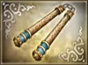
Dragon Fury
Ataque Base: 36; Peso: Médio
Estatísticas: Ataque: +17, Vida: +15, Carregado: +16, Sorte: +16, Velocidade: +19
Etapa: Battle of He Fei (Wu)
Requisitos: Ling Tong deve derrotar Zhang Liao após cada uma de suas quatro aparições.
Passo a passo: Você deve derrotar Zhang Liao em cada uma das quatro vezes que ele aparecer. Assim que a etapa começar, comece a derrotar oficiais e reivindicar bases da forma mais eficiente possível, mas não se afaste muito da área central. Depois de um tempo, Zhang Liao aparecerá no sul e avançará em direção a Sun Quan. Corte-o e derrote-o. A próxima aparição de Zhang Liao será no portão centro-norte. Comece a avançar em direção a ele, derrotando oficiais e capturando portões da forma mais eficiente possível, mas certifique-se de atacá-lo assim que ele aparecer. Sua próxima aparição será na área sudoeste do mapa, e sua última aparição será no portão perto da parede norte do castelo de Cao Cao. Entre cada aparição, continue derrotando outras ameaças e sempre certifique-se de que Sun Quan esteja seguro. Após sua quarta derrota você deverá receber um Relatório de Item Precioso. O único requisito real aqui é que Ling Tong seja forte o suficiente para derrotar Zhang Liao, o que não exige muito. Um segundo jogador pode ajudar com outras ameaças no mapa ou pode ser usado para enfraquecer Zhang Liao durante suas aparições. Apenas certifique-se de permanecer ciente da posição de Sun Quan se as coisas correrem mal, pois é possível que os policiais escapem e acabem com ele se você não matar um número suficiente deles.
Wei - Xiahou Dun
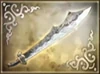
Kirin Fang
Ataque Base: 36; Peso: Médio
Estatísticas: Ataque: +17, Defesa: +17, Musou: +16, Carregado: +17, Montaria: +16
Etapa: Battle of Fan Castle (Wei)
Requisitos: Derrote Guan Ping e evite o ataque aquático.
Passo a passo: Guan Ping fica no canto noroeste. Xiahou Dun deve estar bastante nivelado, já que Guan Ping pode entrar em modo hiper se você permitir. É aconselhável que você o mate rapidamente e se prepare para lutar contra os outros, pois alguns podem vir defender Guan Ping. Além disso, Guan Yu é extremamente difícil no final deste nível depois que você coleta a arma. Depois de derrotar Guan Ping, espere o momento certo para eliminar os oficiais nesta fase. Parar a enchente sozinho deve dar ao seu exército um grande impulso moral. Mas você não precisa necessariamente se apressar para matar Guan Yu ainda. Depois de um tempo, reforços de Wu devem chegar e isso definitivamente ajuda muito. Agora, seu exército deve ter um moral geral mais alto que o inimigo e possivelmente até mais tropas em campo. Zhang Fei aparece para proteger seu irmão em breve. Tente atacar Zhang Fei e Guan Yu um de cada vez,mas elimine Zhang Fei e a maioria dos outros oficiais primeiro, então, no final da etapa, você só precisa se preocupar com Guan Yu. Quando for só você contra Guan Yu, você não terá problemas para derrotá-lo e pegar sua arma.
Wei - Dian Wei
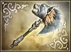
Mad Bull
Ataque Base: 36; Peso: Leve
Estatísticas: Ataque: +18, Vida: +17, Musou: +17, Preencher: +15, Carregado: +15
Etapa: Battle of Wan Castle (Cao Cao)
Requisitos: Encontre Cao Cao e leve-o em segurança até o ponto de fuga. Derrote todos os líderes de tarefas (cerca de seis) que tentam persegui-lo até que uma mensagem diga que ele está seguro.
Passo a passo: Assim que a etapa começar, localize Cao Cao. Ele começará a se mover para um ponto de fuga que você pode ajudar derrotando soldados e oficiais em seu caminho ou área imediata. Continue ajudando-o até que ele escape em segurança e tome nota do portão pelo qual ele saiu. Use seu salvamento agora, pois a parte difícil começa aqui. Dian Wei ficará para trás para derrotar quaisquer soldados que tentem perseguir Cao Cao através daquele portão. Continue até receber uma mensagem dizendo que Cao Cao está seguro, o que acontecerá depois que você derrotar aproximadamente seis líderes de tarefas. Você receberá então o Relatório de Item Precioso. Tenha muito cuidado ao defender este portão e não se afaste muito, pois soldados e líderes de tarefas podem gerar em uma pequena passagem à direita e passar facilmente sem serem detectados. Um segundo jogador pode ajudar nessa tarefa, o que torna o objetivo consideravelmente menos difícil.
Wei - Xu Zhu
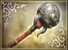
Stone Crusher
Ataque Base: 38; Peso: Leve
Estatísticas: Defesa: +19, Vida: +20, Sorte: +15, Preencher: +17, Arco: +19
Etapa: Battle of Tong Gate (Wei)
Requisitos: Derrote Ma Chao e Pang De, com qualquer um dos jogadores, enquanto Han Sui ainda estiver vivo.
Passo a passo: Você pode desconsiderar ordens de Cao Cao com segurança. Comece derrotando Ma Chao, o que você pode fazer lutando para seguir para o oeste até alcançá-lo ou mantendo sua posição até Cao Cao atacar, o que o leva a se mover em direção à sua posição inicial. Tenha cuidado para não se apressar se você for fraco, pois Ma Chao é forte e apoiado por oficiais subordinados. Depois que Ma Chao for derrotado, lute mais para o oeste até chegar a Pang De, que tem força comparável à de Ma Chao. Derrote-o para solicitar o Relatório de Itens Preciosos. Pegue-o e apoie Cao Cao para completar a etapa. Observe que Xu Zhu não precisa derrotar pessoalmente esses oficiais, o que significa que o apoio de um segundo jogador pode tornar essa arma muito mais fácil de obter.
Wei - Cao Cao
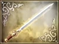
Wrath of Heaven
Ataque Base: 34; Peso: Médio
Estatísticas: Ataque: +17, Vida: +17, Carregado: +17, Montaria: +17, Arco: +15
Etapa: Battle of Xia Pi (Cao Cao)
Requisitos: Derrote Zhang Liao e depois Gao Shun antes que ele reforce a barragem com sucesso.
Passo a passo: Gao Shun se moverá para reforçar a barragem assim que a etapa começar. Você deve derrotar Zhang Liao e então, antes que ele tenha sucesso, Gao Shun. Ignore outros oficiais e derrote Zhang Liao o mais rápido possível. Em seguida, passe para Gao Shun, ainda ignorando outras ameaças, e derrote-o também. Isso deve desencadear o ataque de água e seu Relatório de Item Precioso.
Wei - Xiahou Yuan
Enforcer Rod
Ataque Base: 36; Peso: Médio
Estatísticas: Ataque: +16, Vida: +17, Musou: +17, Carregado: +16, Arco: +19
Etapa: Battle of Chi Bi (Cao Cao)
Requisitos: Frustrar todos os 3 componentes do ataque de fogo de Wu. Em outras palavras, derrote Pang Tong antes que ele escape, derrote Zhuge Liang antes que ele invoque o vento e derrote Huang Gai antes que ele tenha sucesso no ataque de fogo.
Passo a passo: Quando a etapa começar, derrote imediatamente Pang Tong depois que ele trair você. Então vá até o altar de Zhuge Liang e derrote-o somente depois que Cao Pi ordenar e disser que ele é uma ameaça. Caso contrário, derrotá-lo tão rápido não lhe dará a arma. Agora toque o palco normalmente, mantendo-se no lado leste do mapa. Em breve Huang Gai aparecerá e Cao Pi suspeitará dele. Quando Cao Pi ordenar que você derrote Huang Gai, faça isso imediatamente antes que Huang Gai inicie o ataque de fogo. Se tudo estiver em ordem, o relatório do item precioso deverá aparecer depois. A rota mais rápida e eficaz:
1. Comece matando Pang Tong bem na sua frente quando ele desertar e escapar. Vá até onde Jiang Qin está e derrote-o, assim como o portão próximo. Mova-se mais para o sul e derrote Xu Sheng e Pang Zhang, que está na frente do altar.
2. Ataque Zhuge Liang, mas NÃO o mate. O motivo é porque você deve esperar até que Cao Pi diga que ele é uma ameaça. Ficar perto da localização dele é a maneira de conseguir isso. E assim que ele fizer isso, derrote-o e volte para o portão central do lado de Wu na frota, onde você será avisado de um barco cheio de palha.
3. Você pode derrotar os inimigos próximos e capturar a área apenas matando os inimigos ali ou apenas esperar que Zhou Yu comande Huang Gai para seu ataque de fogo. Depois de derrotá-lo, você receberá o relatório de Item Especial localizado na frente do altar de Zhuge Liang pelas 2 caixas que contêm 1 arma e 1 item.
Wei - Zhang Liao
Gold Wyvern
Ataque Base: 37; Peso: Médio
Estatísticas: Ataque: +15, Vida: +17, Preencher: +18, Carregado: +12, Arco: +19
Etapa: Battle of He Fei (Wei)
Requisitos: Frustrar todos os 3 componentes do ataque de fogo de Wu. Em outras palavras, derrote Pang Tong antes que ele escape, derrote Zhuge Liang antes que ele invoque o vento e derrote Huang Gai antes que ele tenha sucesso no ataque de fogo.
Passo a passo: Quando a etapa começar, derrote imediatamente Pang Tong depois que ele trair você. Então vá até o altar de Zhuge Liang e derrote-o somente depois que Cao Pi ordenar e disser que ele é uma ameaça. Caso contrário, derrotá-lo tão rápido não lhe dará a arma. Agora toque o palco normalmente, mantendo-se no lado leste do mapa. Em breve Huang Gai aparecerá e Cao Pi suspeitará dele. Quando Cao Pi ordenar que você derrote Huang Gai, faça isso imediatamente antes que Huang Gai inicie o ataque de fogo. Se tudo estiver em ordem, o relatório do item precioso deverá aparecer depois. A rota mais rápida e eficaz:
1. Comece matando Pang Tong bem na sua frente quando ele desertar e escapar. Vá até onde Jiang Qin está e derrote-o, assim como o portão próximo. Mova-se mais para o sul e derrote Xu Sheng e Pang Zhang, que está na frente do altar.
2. Ataque Zhuge Liang, mas NÃO o mate. O motivo é porque você deve esperar até que Cao Pi diga que ele é uma ameaça. Ficar perto da localização dele é a maneira de conseguir isso. E assim que ele fizer isso, derrote-o e volte para o portão central do lado de Wu na frota, onde você será avisado de um barco cheio de palha.
3. Você pode derrotar os inimigos próximos e capturar a área apenas matando os inimigos ali ou apenas esperar que Zhou Yu comande Huang Gai para seu ataque de fogo. Depois de derrotá-lo, você receberá o relatório de Item Especial localizado na frente do altar de Zhuge Liang pelas 2 caixas que contêm 1 arma e 1 item.
Wei - Sima Yi
Dark Feather
Ataque Base: 32; Peso: Médio
Estatísticas: Ataque: +15, Defesa: +16, Musou: +19, Preencher: +15, Carregado: +15
Etapa: Battle of Chen Cang (Wei)
Requisitos: Capture as três bases de defesa ao longo do lado sul do mapa antes que qualquer dano seja causado ao castelo.
Passo a passo: A melhor estratégia é ir imediatamente para as 3 bases, ignorando todos os outros adversários. Você também pode ignorar as unidades de cerco que atacam o castelo, pois demora um pouco para que elas causem danos consideráveis.
Wei - Xu Huang
Marauder
Ataque Base: 38; Peso: Leve
Estatísticas: Ataque: +17, Vida: +18, Sorte: +15, Preencher: +15, Velocidade: +15
Etapa: Battle of Chang Ban (Cao Cao)
Requisitos: Após a chegada dos reforços de Liu Qi, derrote Guan Yu e Zhang Fei.
Passo a passo: Liu Qi chegará com reforços somente se Liu Bei conseguir chegar à unidade de Guan Yu. Portanto, você perderá a arma se Liu Bei for cercado antes de se juntar a Guan Yu. Em geral, você quer ficar completamente longe do caminho de retirada de Liu Bei e derrotar generais somente se eles estiverem próximos da posição de Cao Cao. As únicas bases neutras que você deve reivindicar são aquelas no extremo sul, porque elas não podem impedir Liu Bei de chegar a Guan Yu. Eles também ajudam a impedir que Liu Bei escape quando os reforços de Liu Qi chegam.
Wei - Zhang He
Phoenix Talon
Ataque Base: 36; Peso: Médio
Estatísticas: Ataque: +16, Musou: +18, Carregado: +15, Preencher: +15, Velocidade: +19
Etapa: Battle of Jie Ting (Wei)
Requisitos: Isole Ma Su e force-o a recuar, depois derrote-o antes que ele consiga fazê-lo.
Passo a passo: Siga para noroeste em direção a Gao Xiang e ao capitão do portão perto dele, matando oficiais à medida que avança. Depois de derrotá-los, siga para o sul e depois para o oeste em direção a Wang Ping e seu capitão de portão, e derrote-os também. Isso corta os reforços de Ma Su, isolando-o na montanha. Volte para o local onde você lutou contra Gao Xiang e limpe o que resta dos soldados lá até que Ma Su comece a recuar. Mas tenha cuidado, porque o retiro de Ma Su é um evento de duas partes. A princípio ele proclamará sua vergonha e alguns minutos depois declarará que está recuando. Derrote-o somente depois que ele começar a recuar fisicamente. Mova-se imediatamente para noroeste e corte-o para derrotá-lo. Você deve então obter o Relatório de Item Precioso.
Wei - Zhen Ji
Dark Moon Flute
Ataque Base: 32; Peso: Médio
Estatísticas: Defesa: +18, Vida: +17, Montaria: +17, Preencher: +20, Arco: +18
Etapa: Battle of He Fei Castle (Wei)
Requisitos: Mate 300 pessoas e depois encontre-se com Cao Pi.
Passo a passo: Basta passar pelo nível como faria normalmente, limpando o castelo He Fei. Aproveite ao máximo o incrível musou de Zhen Ji para acumular essas 300 mortes. Tente colocar as mãos em uma fúria musou, já que Sun Quan é bastante duro como sempre. Encontre-se com Cao Pi para a cena e você receberá um relatório de item precioso. Vá até o barco de Sun Quan e à direita, quando passar por Zhou Tai, ele estará à sua esquerda. Derrote Sun Quan (tenha cuidado, ele fica furioso) e a arma será sua.
Wei - Cao Ren
Roc
Ataque Base: 32; Peso: Leve
Estatísticas: Ataque: +15, Defesa: +18, Vida: +19, Preencher: +15, Arco: +15
Etapa: Escape from Chi Bi (Wei)
Requisitos: Cao Ren deve derrotar todos os reforços de Wu e Shu, exceto Liu Bei e Guan Yu, bem como os dois oficiais de Liu Bei, Sun Qian e Mi Fang, antes que os próprios reforços de Cao Cao lhe digam para deixar tudo para o oficial.
Passo a passo: Você deve derrotar os oficiais em um período de tempo razoável, mas não será muito pressionado. Os reforços que você deve derrotar incluem Cheng Pu, Han Dang, Zhu Zhi, Zhao Yun, Zhang Fei e Guan Ping, e não há necessidade de derrotar sub–generais. É melhor derrotá-los quando chegarem, derrotando outros oficiais e capitães de portão sempre que for conveniente. Uma vez conseguido isso, derrote Sun Quan pelo Relatório de Itens Preciosos. Quando a etapa começar, comece colocando oficiais ao redor dos capitães da guarda para permitir que uma força comece a se formar. Derrote oficiais e reforços quando eles chegarem, seguindo a ordem aproximada listada acima, até a hora de enfrentar Guan Ping. Ele é durão, mas contanto que você não tenha se cercado, você deve ficar bem. Depois, Sun Quan aparecerá. Derrote-o e pegue seu item. Derrote Liu Bei para limpar o palco e abrir a rota de fuga de Cao Cao.
Wei - Cao Pi
Chaos
Ataque Base: 34; Peso: Médio
Estatísticas: Ataque: +15, Defesa: +15, Musou: +19, Preencher: +15, Velocidade: +19
Etapa: Battle of Wu Zhang Plains (Wei)
Requisitos: Provoque rapidamente a morte de Zhuge Liang. Então, derrote todos os arbalests que aparecerem.
Passo a passo: Para provocar a morte de Zhuge Liang, derrote 3 generais (não subgenerais). Os generais na área central são, em sua maioria, oficiais genéricos, então eles devem ser alvos fáceis. Também é recomendável que você feche a rota de suprimentos leste de Wei para ajudar a aumentar suas chances de ganhar o nível. Quando os arbalests aparecerem, tenha cuidado ao destruí-los, pois também há torres de arqueiros e juggernauts na plataforma. Certifique-se de destruir pessoalmente até a última besta e a mensagem do item precioso deve aparecer.
Wei - Pang De
Heavenly Halberd
Ataque Base: 36; Peso: Leve
Estatísticas: Ataque: +16, Defesa: +15, Vida: +18, Montaria: +17, Sorte: +15
Etapa: Battle of Mt. Ding Jun (Wei)
Requisitos: Derrote todos os generais inimigos antes que Cao Cao chegue.
Passo a passo: Cao Cao chegará mais cedo se Huang Zhong ou Xiahou Yuan forem derrotados, então sua prioridade deve ser manter Xiahou Yuan vivo e derrotar Huang Zhong por último. Se você escolher subir o Monte Tian Dang (a montanha central) a qualquer momento, Huang Zhong descerá a montanha e Xiahou Yuan será rapidamente derrotado. Portanto, seu plano deve ser caçar generais inimigos, ocasionalmente protegendo Xiahou Yuan se ele estiver em perigo, sem nunca subir a montanha até o último momento. Esteja ciente de que generais inimigos atacam do topo da montanha, então você terá que apoiar Xiahou Yuan pelo menos uma vez.
Others - Diao Chan
Diva
Ataque Base: 32; Peso: Pesado
Estatísticas: Defesa: +16, Musou: +18, Preencher: +18, Velocidade: +19, Sorte: +18
Etapa: Battle of Xia Pi (Lü Bu)
Requisitos: Derrote todos os generais e subgenerais antes da chegada de Cao Cao; resgate Hou Cheng e Song Xian.
Passo a passo: Equipe um bom selim para esta etapa. Saia imediatamente do castelo e siga em direção à posição de Hou Cheng no oeste. Resgate Hou Cheng e Song Xian derrotando os subgenerais de Xiahou Dun e Xiahou Yuan. Quando você fizer isso, os irmãos Xiahou também atacarão. Depois derrote Zhang Fei e Guan Yu no sul. Prossiga para Liu Bei, que também está se preparando para atacar o castelo. Quando você derrotá-lo, Cao Cao chegará, mas sua arma também.
Others - Lu Bu
Sky Scorcher
Ataque Base: 40; Peso: Médio
Estatísticas: Ataque: +20, Defesa: +20, Vida: +19, Musou: +19, Montaria: +20
Etapa: Battle of Chang Shan (Yuan Shao)
Requisitos: Obtenha 1.000 KOs.
Passo a passo: Basicamente, basta sentar-se em frente a um portão e matar muitas tropas. Há dois que você pode escolher: o que fica do lado de fora do portão oeste do Castelo Chang Shan e o mais próximo de Gongsun Zan. Qualquer um deles será suficiente. Apenas certifique-se de eliminar Zhang Yan e a base de ataque quando começar. Vá direto para Zhang Yan, mate-o, tome a base de ataque e depois siga para um portão. Você deve pular o oficial que aparece à direita da sua posição inicial, para que Diao Chan e seus soldados não roubem suas mortes ou atrapalhem.
Others - Dong Zhuo
Horror
Ataque Base: 36; Peso: Médio
Estatísticas: Ataque: +18, Defesa: +15, Vida: +15, Sorte: +17, Montaria: +17
Etapa: Battle of Liang Province (Dong Zhuo)
Requisitos: Capture todas as 5 bases inimigas e derrote Ma Chao e Pang De.
Passo a passo: Reforços chegarão para o inimigo se você demorar muito para capturar as bases, mas sua captura rápida é uma tarefa bastante fácil. Ma Chao e Pang De serão os inimigos mais poderosos em campo, por isso ajuda isolá-los derrotando primeiro generais menores. Se isolados, não se revelarão demasiado duros. Pang De é seu maior oponente nesta fase. Quando os dois forem derrotados, a mensagem do item precioso deverá aparecer.
Others - Yuan Shao
Sword of Kings
Ataque Base: 34; Peso: Médio
Estatísticas: Arco: +15, Defesa: +18, Musou: +17, Preencher: +15, Montaria: +15
Etapa: Battle of Guan Du (Yuan Shao)
Requisitos: Mantenha Yan Liang e Wen Chou vivos até que o baixo moral force os portões de Guan Du a se abrirem.
Passo a passo: No romance, enquanto luta contra Yuan Shao, Guan Yu mata Yan Liang e Wen Chou em pouco tempo. As circunstâncias não são diferentes aqui, e se Guan Yu encontrar qualquer um deles, ele os matará imediatamente. Por isso, quando a etapa começar, a derrota dele deve ser sua primeira e única prioridade. Uma vez feito isso, derrote todos os outros oficiais ao alcance, bem como dentro da fortificação onde Guan Yu começou. Isso mantém Yan Liang seguro, pois ele se moverá nessa direção. Deste ponto até a queda de Guan Du, fique atento aos relatórios de baixo moral sobre Yan Liang e Wen Chou, atendendo-os imediatamente em caso de problema. Comece a se mover para oeste em direção a Cao Pi, continuando a derrotar os oficiais à medida que eles se movem para um alcance conveniente. Depois de derrotar Cao Pi (o que provavelmente acionará um Relatório de Item Precioso para o Orbe de Gelo no vale ao norte do rio central horizontal), comece a se mover para o norte na direção de Wen Chou. Ambos os oficiais já devem estar seguros, então tudo o que resta é matá-los e apoiar as ideias de Yuan Shao para derrotar Cao Cao, e eventualmente os portões de Guan Du serão forçados a abrir, o que motivará o Relatório de Itens Preciosos da sua arma. Se você estiver com problemas, jogue no palco no Modo Livre, onde a dificuldade é de apenas uma estrela.
Others - Zhang Jiao
Volcano Staff
Ataque Base: 34; Peso: Leve
Estatísticas: Vida: +17, Defesa: +18, Musou: +19, Preencher: +17, Carregado: +16
Etapa: The Yellow Turban Rebellion (Yellow Turbans)
Requisitos: Sem deixar que nenhum general ou subgeneral aliado seja derrotado, ajude com sucesso Zhang Bao, Zhang Liang e Zhang Man Cheng em suas respectivas manobras.
Passo a passo: Quando começar, ajude Zhang Man Cheng a conseguir lançar pedras sobre o inimigo derrotando Gongsun Yue enquanto ele avança. Em seguida, prossiga para ajudar Zhang Bao e Zhang Liang a fazer lavagem cerebral nas tropas de Cao Cao e Sun Jian, respectivamente, esperando nos respectivos altares até que o estratagema seja concluído. A maior ameaça ao seu sucesso é a derrota de seus aliados, então você vai querer fazer tudo ao seu alcance para garantir que eles permaneçam vivos. Há várias maneiras de fazer isso. Você pode trazer um guarda-costas capaz de manter o moral, lutar ao lado de suas tropas para elevar o moral ou tentar completar a etapa o mais rápido possível para evitar que seu próprio moral diminua muito. Você também pode trazer consigo um segundo jogador para ajudar a lutar ao lado de seus aliados.
Others - Meng Huo
King of Beasts
Ataque Base: 36; Peso: Leve
Estatísticas: Ataque: +18, Vida: +19, Montaria: +15, Preencher: +15, Carregado: +15
Etapa: Conquest of Nan Zhong (Nanman)
Requisitos: Derrote Wei Yan, Huang Zhong e Yue Ying sem que seus aliados desertem.
Passo a passo: Dong Tu Na desertará se Wu Tugu e suas tropas blindadas caírem nas mãos dos explosivos de Zhuge Liang, e Ahui Nan desertará se Jinhuan Sanjie cair nas mãos de Yue Ying e seus gigantes. Portanto, é de vital importância que você frustre essas duas manobras. Comece atacando Wei Yan diretamente na sua frente. Se você está confiante em suas habilidades, ignore os subgenerais de Wei Yan e vá diretamente atrás dele. Depois de terminá-lo, siga para Wu Tugu, onde Zhuge Liang acionará seus explosivos. Você receberá uma mensagem informando que Dong Tu Na está impressionado com Zhuge Liang, pedindo que você resgate Wu Tugu para evitar uma deserção. Faça isso derrotando todas as unidades de tarefa na área. Agora prossiga para os pântanos venenosos no leste e derrote rapidamente Huang Zhong. Haverá uma mensagem pedindo que você elimine um ponto de entrada para que seus reforços possam chegar,faça isso se Jinhuan Sanjie não estiver em perigo de derrota. Ao chegar à abertura norte, ignore os gigantes e vá diretamente para Yue Ying. Se Jinhuan Sanjie estiver vivo e Ahui Nan ainda estiver do seu lado, você deverá receber o relatório do item precioso depois de derrotar Yue Ying.
Others - Zhu Rong
Inferno
Ataque Base: 34; Peso: Médio
Estatísticas: Defesa: +15, Musou: +18, Arco: +15, Preencher: +17, Carregado: +16
Etapa: The Invasion of Nan Zhong (Nanman)
Requisitos: Derrote Gan Ning e Jiang Qin antes de destruir a ponte.
Passo a passo: Você pode eliminar inimigos se quiser, mas não chegue perto da ponte ao sul de Lü Meng, pois você fará com que ela seja destruída. Cerca de 17 minutos após o início do jogo, suas unidades de feras atacarão o acampamento Wu. Gan Ning e Jiang Qin aparecerão como reforços de Wu. Eles aparecerão no canto noroeste, por isso seria aconselhável eliminar os inimigos ao redor do sul. Agora vá e mate Gan Ning e Jiang Qin.
Others - Zuo Ci
Trump Deck
Ataque Base: 40; Peso: Médio
Estatísticas: Defesa: +15, Musou: +20, Arco: +15, Preencher: +20, Carregado: +15
Etapa: Battle of Hu Lao Gate (Allied)
Requisitos: Zuo Ci deve derrotar Lü Bu.
Passo a passo: Lü Bu é excepcionalmente poderoso neste palco, mas você não deve ter muita dificuldade se Zuo Ci tiver sido um pouco fortalecido. Se Lü Bu for poderoso demais para você, derrote seus soldados e outros oficiais no palco para diminuir seu moral e liberar seu apoio. Se você estiver lutando contra ele com outros policiais, o que é comum, salve quando ele estiver quase morto para garantir que outro policial não aceite sua morte. Você receberá o Relatório de Item Precioso depois de derrotá-lo. Você também pode lutar contra Lü Bu de outra maneira. Você pode atraí-lo a um ponto em que ele comece a correr de volta e atacá-lo naquele momento. Além disso, você pode acertá-lo em uma direção oposta ao Portão Hu Lao, para que ele continue correndo de volta para o portão. Isso garantirá que Lü Bu não ataque você e não protegerá seus ataques.